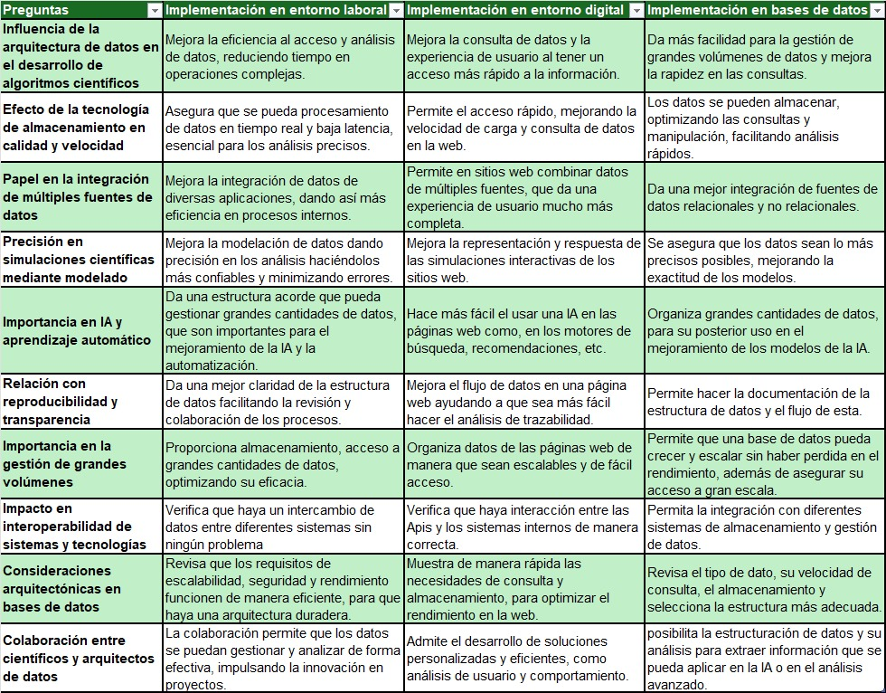

Descripción
Relación ciencia y tecnología
La ciencia genera el conocimiento necesario, y la tecnología aprovecha este conocimiento para elaborar herramientas prácticas. Un ejemplo es el desarrollo de tecnologías que optimizan el almacenamiento y permiten el análisis de grandes cantidades de datos.
Relación ciencia y técnica
La técnica aplica métodos específicos para resolver problemas prácticos científicos. Un ejemplo de esta unión es el modelado de datos, donde las técnicas organizan los datos y la ciencia valida la precisión y eficiencia de los métodos y procesos.
Relación tecnología y técnica
La tecnología proporciona herramientas para facilitar la implementación de las técnicas. Por ejemplo, el almacenamiento permite aplicar técnicas en tiempo real, mejorando la calidad y velocidad del análisis científico.
Relación tecnología y ciencia
La tecnología apoya a la ciencia proporcionando herramientas para explorar y analizar grandes cantidades de datos, lo que permite generar análisis más precisos y rápidos.
Relación técnica y ciencia
La ciencia proporciona conocimiento que ayuda a mejorar las técnicas utilizadas para resolver problemas específicos. En el modelado de datos, la ciencia y las técnicas colaboran para mejorar la precisión y eficiencia en el manejo de la información.
Relación técnica y tecnología
La técnica define los métodos que emplearán las herramientas tecnológicas. Un ejemplo es la optimización del almacenamiento y procesamiento, mejorando la escalabilidad y precisión de las tecnologías.
